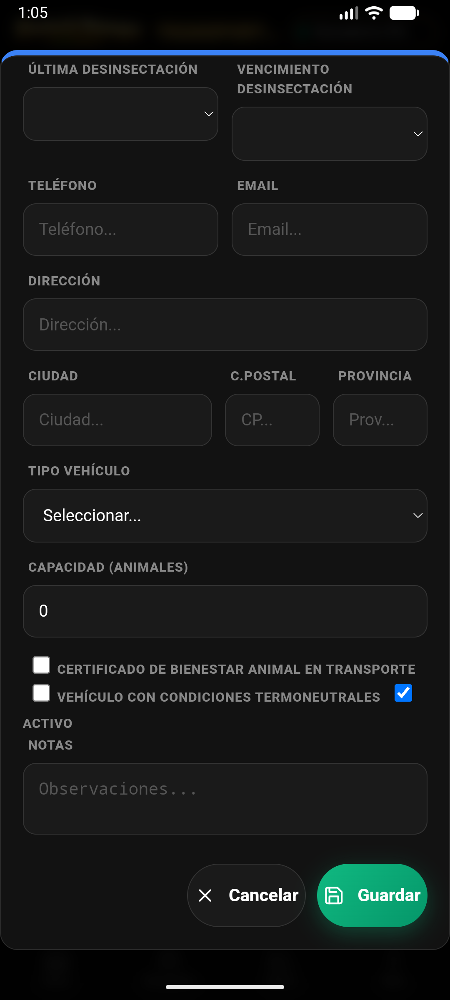
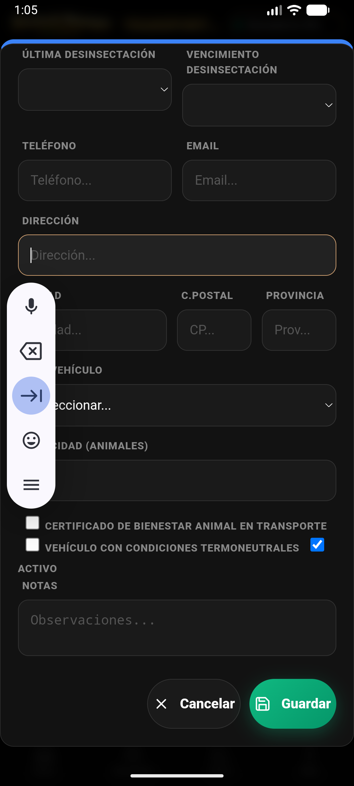

1. Acceso a Comercialización
Existen dos formas rápidas de acceder a la gestión de ventas en la v4.8.0:
- Desde el Menú Más: Pulsa Más en la barra inferior y selecciona Comercial.
- Desde el Hub ExPro: En la consola ExPro, usa el botón directo "Ir a Comercialización" situado al final del panel.

Sección de Comercialización con pestañas de Carne y Leche.
2. Venta Masiva de Carne
El wizard de venta te guía por 5 pasos obligatorios para asegurar la trazabilidad.
- Selección de Animales: Marca los animales aptos para la venta.
- Trazabilidad: Indica fecha, matadero de destino, código ICA y Nº de Guía.
- Pesos: Registra el peso vivo y el peso canal de cada animal. La app calcula el rendimiento automáticamente.
- Clasificación SEUROP: Define la calidad de las canales (S, E, U, R, O, P).
- Transportista: Asocia el transporte y genera los documentos oficiales.
🚨 Bloqueo Sanitario: Si un animal está en periodo de supresión, el sistema impedirá su venta.
3. Albarán de Leche
En la pestaña Leche puedes registrar las recogidas de cisterna.

Gestión de entregas de leche con MOFA acumulado.
- Pulsa ➕ Nuevo para abrir el Wizard de Albarán Lácteo (6 pasos).
- Registra los datos de la cisterna, temperatura de carga y Letra Q.
- Introduce los resultados del laboratorio (Grasa, Proteína, Somáticas).
- La app calcula el Precio Final y el MOFA mensual.
Livestock Manager Premium · v4.8.0 · Guía de Comercialización